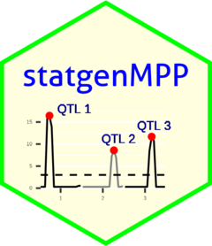

Package index
-
calcIBDMPP() - IBD calculation for multi parental populations
-
readRABBITMPP() - Read IBD probabilities
-
createGDataMPP() - Create an object of class gDataMPP
-
plot(<gDataMPP>) - Plot function for the class
gDataMPP
-
summary(<gDataMPP>) - Summary function for the class
gDataMPP
-
selQTLMPP() - Multi round genome scans for QTL detection
-
summary(<QTLMPP>) - Summary function for the class
QTLMPP
-
print(<summary.QTLMPP>) - Print summary of object of class
summary.QTLMPP
-
plot(<QTLMPP>) - Plot function for the class
QTLMPP
-
kinshipIBD() - Compute kinship matrix for IBD probabilities
-
barleyPheno - Phenotypic data for awn length in barley
-
maizeSQM - Pre-computed SQM output maize
-
maizeMQM - Pre-computed MQM output maize
-
barleyMQM - Pre-computed MQM output barley